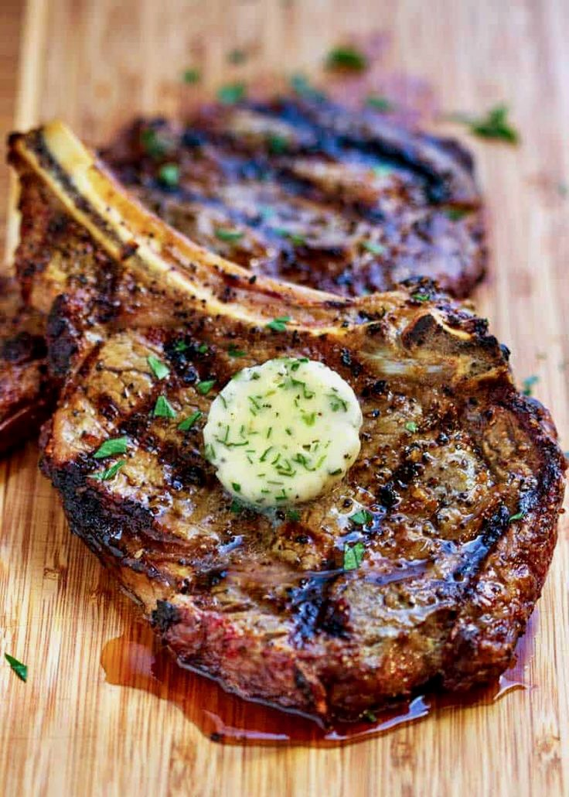

Signature private dining
Classic Sunset Dinner
Current pricing confirmed by inquiry
Appetizers
- Chef Salad
- Lobster Beggar’s Purse
- Jumbo Shrimp Cocktail
- Tuna Tower
- Sea Bass Ceviche
Main courses
- Local Fruits of the Sea
- Rib-Eye Steak
- Sesame-Encrusted Tuna
- Sautéed Sea Bass
- Chicken Roulade